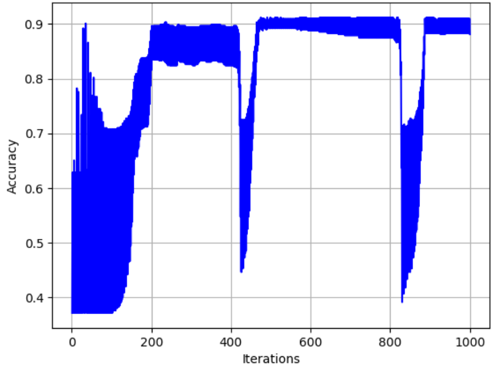

Understanding the Basic Architecture
In this deep dive, we'll explore Logistic regression , which is just like linear regression in impplementation with just one change implying sigmoid at the end making the regression turn into a probability one i.e., a classification model.
Logistic Regression Class Implementation
class LogisticRegression:
def __init__(self,ler_r=0.001,nf_iters=1000):
self.ler_r=ler_r
self.nf_iters=nf_iters
self.weights=None
self.bias=None
self.acc_history=[]
Required Functions:
- fit - fits the model
- compute_gradients - Computes the derivative
- sigmoid - transformed a value using sigmoid function
- predict - Make predictions with trained model
The model starts with initailizing weights and biases randomly or zero then change them rigorously on the basis of gradient descents with a learning rate for some epochs in same way like linear regression but just it gives probability in last with value form 0 to 1.
Model Performance Visualization

Showing how the Accuracy is fluctuating with changing iterations.

Confusion Matrix which shows how the Accuracy and Precission.
ROC-AUC curve which tells us about true Positive rate and False Positive rate relation
Key Learnings and Challenges
- Easy easiest of the model to implement.
- Linear separableit performs very well for problems in which classes are linearly separable.
- Regularization can help prevent overfitting by using L1 or L2 techniques.
- LimitsSensitivity to outliers, assumes linearity.
Model Performance Metrics
Accuracy
94.7%
ROC-AUC score
0.96>